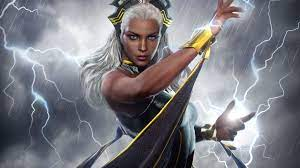

Norse mythology, Ymir, also called Aurgelmir, Brimir, or Bláinn, is the ancestor of all jötnar. Ymir is attested in the Poetic Edda, compiled in the 13th century from the earlier traditional material, in the Prose Edda, and in the poetry of skalds.
